Introduction
Reviewable is a comprehensive code review tool that is fully integrated with GitHub (and only GitHub). It's
- Thorough — Tracks where participants stand on each discussion, ensuring it won't disappear until resolved. Fully customizable logic determines when a review is complete.
- Efficient — Clearly shows net deltas since last time you looked, even if commits get rebased or amended. Batches comments and correctly threads email responses.
- Focused — Works only with GitHub and GitHub Enterprise, making for a seamless integration. Minimal admin busywork, no extra fluff — just awesome code reviews.
With Reviewable, you can:
- Instantly diff any two revisions of a file, in either a unified or side-by-side view.
- Hide minor changes, including whitespace, merge, and rebase deltas.
- Map line comments across file revisions and keep them around until resolved, not just until changes are pushed.
- Keep track of who reviewed which revision of each file to ensure that no changes are missed.
- Combine commits for review, or review each commit separately.
- Customize the line length margin, fonts, colors, keyboard shortcuts, and more.
- Jump from a comment straight to the right spot in your favorite editor.
- Enjoy a modern, clean UI with a touch of whimsy.
- Get full contextual help, and fast support if you have questions.
- Sign in with GitHub account — no separate accounts to manage.
- Keep all your code on GitHub, not on our servers.
This user guide is a helpful resource for learning all of the details about every Reviewable feature. Soon, you'll be more efficient at eliminating buggy code and helping your team improve their delivery pipeline.
How to use this guide
Reviewable is a powerful, feature-rich, and highly configurable tool, so it'll probably take you a while to figure out how to use it to its full potential. The first steps are fairly straightforward, though:
- Everybody should read through the Registration and Authorization section that follows.
- Then, if Reviewable is already set up for your favorite repos, you can just keep reading straight into the Reviews section that follows and dip into the other sections as needed.
- If, on the other hand, you're an admin setting up Reviewable for the first time, you'll want to jump to the Repositories section first for details on how to connect repos and start a subscription (if necessary).
If at any point you notice a typo or mistake, please don't hesitate to jump in and propose an edit via the link in the top right corner of every page.
Help on using Reviewable
Help is available through many channels:
- Press
F1orh, or click Support > Help, to view the hints for all of the features on a page. If you invoke help while hovering your mouse pointer over a button or feature, specific help for that feature will appear. Press the same key again, or click on the grey background to get back to the app.
On tablets and other touch devices with no convenient keyboard, tap the question mark icon in the bottom-right corner of the screen instead.
-
Click Support > Issues to report a bug, or make a feature request. To potentially get an answer faster and help reduce triaging overhead, please check existing issues for duplicates first.
-
Click Support > Chatroom to ask other questions in a public forum.
-
Send us an email for questions that should stay private, or engage in private chat through Gitter.
Staying up to date
Follow us on Twitter at @reviewableio for service status updates, changelog notifications, and occasional discussions and votes on potential features. For the truly dedicated, you can watch the Reviewable/Reviewable repo for new issues and updates to these docs, or hang out in the Gitter channel to help out other users when we're not around. (Thanks!)
Registration and GitHub Authorization
It is necessary to have a GitHub account to sign-in to Reviewable. Simply click the Sign In button in the upper-right corner of the page, and then enter your GitHub credentials in the popup window. If necessary, you can create a GitHub account from there.
Subscribing organizations member sign-up
To ease onboarding for members of organizations with a private repo subscription, a popup window will appear that provides a clear call to action (on the first sign-in):
Learn more in Subscriptions.
OAuth app access restrictions
OAuth app access restrictions can completely block Reviewable from an organization. This often happens inadvertently and is usually undetectable by Reviewable. If some of your PRs/repo/organizations are inexplicably missing, make this one of the the first things that you check.
A rare but even more confusing situation is that forked repos retain the access restrictions of their original organization. So, it's possible that your organization allows Reviewable, but a repo might not show up on the Repositories page because its original organization does not allow Reviewable. You will need to either get the original organization to allow Reviewable or make a manual copy of the repo instead of a fork.
GitHub authorizations
It is necessary for you to grant authorizations to Reviewable in GitHub. Your current GitHub authorization scopes appear at the bottom of the Account Settings drop-down window:
Here's how we use the GitHub authorizations you grant to Reviewable:
public_repo— Reviewable will post pull request comments on your behalf, merge pull requests, delete branches on your request, and pin revision commits in the repo so they don't disappear if you rebase.repo— Reviewable will list your private repos and organizations, read source code (only in the browser), read pull request metadata and comments, post pull request comments on your behalf, merge pull requests, delete branches on request, and pin revision commits in the repo so they don't disappear if you rebase.admin:repo_hook— Reviewable will add or remove an event hook when connecting or disconnecting a repo, so that Reviewable is notified of relevant events (e.g., pull request updates).admin:org_hook— So that Reviewable is notified of relevant events — such as organization membership changes — Reviewable will add or remove an event hook when subscribing to a plan or unsubscribing from a plan.read:org— Reviewable will get a list of the organizations of which you’re a member—even if your membership is private. Reviewable will also retrieve a list of all the repos which you can access as an organization member, and a list of your team memberships.user:email— Notifications specific to Reviewable are sent to your email address, such as failed subscription charges, quota overages, or failures to parse an emailed comment.
Reviewable staff may also contact you directly in exceptional circumstances — such as when something has gone wrong with your account. All day-to-day review email from Reviewable is sent indirectly through GitHub, and is controllable with GitHub notification settings.
GitHub lets you connect multiple email accounts and define how to route notifications based on which organization they pertain to. Unfortunately, this routing table isn't available through their API, so Reviewable always sends non-review email messages to the primary email address for your account. Review emails are handled by GitHub, which has access to the routing configuration and will honor it.
While Reviewable only needs read access to your repositories to function, GitHub permission scopes don't distinguish between read and read/write access. Write access is also required to post pull request reviews on your behalf, and let you merge PRs from within Reviewable.
GitHub Apps do support finer-grained permissions scoping, and it's a long term goal of the team at Reviewable to shift over to this platform (currently, it's an “OAuth app”). So far, though, this platform doesn’t support all the APIs that Reviewable requires.
You can revoke any or all of these permissions at any time in your GitHub authorized applications settings page on GitHub. Remember to disconnect your repos before revoking, otherwise Reviewable will bug you about the lost permissions.
Authorization scopes
GitHub authorization scopes cannot be narrowed to a particular organization. For more information, GitHub also has some docs on authorization scopes. Specifically, we recommend that you take a moment to learn about OAuth App access restrictions.
SAML Authorization
Github allows organizations to protect resources with a SAML SSO server. If your organization has enabled SAML you'll need to explicitly authorize Reviewable to access your organization; your previous generic authorization will not be enough. If Reviewable can safely notify you of this change, we'll prompt you to re-authorize your current session. Otherwise, we'll have to terminate your current authorization and prompt you to sign back in.
Code review
In Reviewable, each review corresponds to a GitHub pull request. To initiate a code review, you’ll first need to create a pull request as usual and then access the corresponding review. This can be done either (a) through the link to Reviewable inserted into the PR, or (b) by clicking on the PR on your Reviewable dashboard.
In general, Reviewable keeps data synchronized between the review and its pull request for all compatible features, such as assignees, comments, and approvals. However, some features are unique to Reviewable (such as file review marks or discussion dispositions). Other Reviewable features cannot be mapped effectively due to GitHub API limitations, such as line comments that often become top level comments. Consequently, we don’t recommend mixing use of Reviewable and GitHub reviews on the same pull request as the experience will prove frustrating on both sides.
Reviewable can't operate directly on raw commits, since it doesn't actually clone your repo. It depends heavily on GitHub APIs that are only available for pull requests.
This chapter provides an overview of the review page, but the core features of reviewing files and managing review discussions are addressed separately in subsequent chapters.
User roles
Throughout this guide, we'll often refer to users by the role they play in a review. Reviewable automatically assigns one of three roles to every review participant:
- Author: the creator of the pull request. Note if an author marks a file as reviewed they'll become a reviewer.
- Reviewer: anybody that is not an author or mentionee.
- Mentionee: someone other than the author that was @-mentioned in a discussion (except the main top-level one). Note that a mentionee will become a reviewer if they start a new discussion or mark a file as reviewed.
It's possible for one person to be both the author and a reviewer in a “self-review” scenario. In that case, the “reviewer” behavior usually trumps the “author” path, but it's context-dependent.
Publishing your review
As you work through a review using the tools at your disposal, Reviewable will automatically save your changes but they won't be visible to others. To publish all drafts and other buffered state changes (including review marks, dispositions, and acknowledgements), click the Publish button. This action will reveal all of these to other authorized Reviewable users, and also post a single, combined message to the PR on GitHub.
To temporarily keep a draft from being published, switch its disposition to Pondering.
If you'd like to suppress posting the combined message to Github, e.g. because you want to separate the Reviewable review from the GitHub review process, you can do so on a PR-by-PR basis. Just add the Comments only in Reviewable label (exact spelling!) to the PR and neither batch published nor single-send comments will be posted to GitHub.
Some Reviewable inline comments won't appear as inline comments in GitHub and vice-versa, because the GitHub model for comment placement is poor and trying to conform to it would invalidate many of the best features in Reviewable.
You can open the dropdown menu off the Publish button to set a few extra options. The dropdown also shows you a preview of how your published message will appear on GitHub. You can click on any of your comments in this preview to navigate to the corresponding draft in the review.

Approval levels
Like for GitHub reviews, there are three approval levels you can choose from when publishing via the dropdown attached to the button:
- Comment — Submit general feedback without explicit approval.
- Approve — Submit feedback and approve merging these changes.
- Request changes — Submit feedback that must be addressed before merging.
Reviewable will select a default approval level for you according to your review marks and the disposition of any comments you’re sending. You can override this level in the Publish dropdown menu for the review that you are about to publish (your selection is not “sticky” for subsequent publications). This approval level will be visible to others, and may affect the review completion requirements for both GitHub and Reviewable.
You may only change the approval level if you have write permissions to the repository and are not the author of the PR. As a repository admin you can also disable the Approve and Request changes for everyone via the custom review completion condition if they are apt to mess up your team's workflow.
If you choose Comment, any previous Approve or Request changes will remain in effect; you cannot rescind your vote, only change it.
Requested reviewers synchronization
Reviewable maintains its own list of people whose action is needed on a review (as shown on the dashboard and in the participants summary), independent of GitHub's requested reviewers list. You can choose to synchronize the latter with the former by checking the Sync requested reviewers box. Doing so will request reviews from Reviewable's awaited reviewers, and cancel requests for people who have left Reviewable's list. The option shows you what changes it will make in GitHub and you can always override it with ±reviewer inline directives.
It's not possible to request a review from the pull request's author in GitHub, nor from people who aren't collaborators on the repo, even if the user in question is on Reviewable's list of awaited reviewers. Only users with push permissions on the repo can request reviewers.
Keeping requested reviewers up-to-date (rather than just requesting the initial review) can improve integration with other tools, such as Pull Reminders.
Repository admins can customize the list of awaited reviewers and, if desired, override the Sync requested reviewers checkbox in a custom review completion condition. For example, you may wish to remove other users from the list if the PR author is on it, or force this option on for everyone to maintain a consistent workflow.
Review summary
For your convenience, Reviewable will provide a review summary panel at the end of the review so you don't have to scroll back to the top of the page to leave a comment in the top-level review discussion.
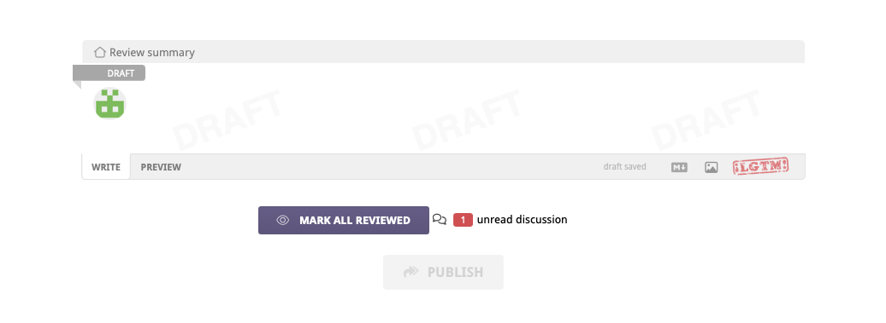
The review summary doesn't show up if the review was forced into one file at a time mode, due to too many files showing.
The draft has an LGTM button that you can use to approve the pull request. (See the repository settings for information on how to customize this button.)
Below the draft, there are counters of unreviewed files and unresolved discussions. A red counter indicates that there's still something for you to do: either review some files, or read / respond to some discussions. When appropriate, you can hover over a counter to reveal a button underneath that will mark files as reviewed or discussions as read.
Grey counters — even if non-zero — are just an indication of the review's state, but don't imply that any action is required from you at this time.
Merging a pull request
When a review is complete, a victory graphic appears and you can merge the pull request directly from within Reviewable given sufficient permissions.
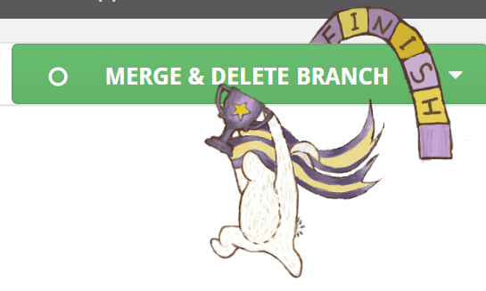
A review is considered complete when the first defined condition of the following is true:
-
You've defined a custom review completion condition and it has returned a verdict with
completed: true(irrespective of any other per-file or per-discussion flags). -
You've turned on branch protection for the target branch in this repo in GitHub, and GitHub says that a merge is permitted.
-
Otherwise, a review is considered complete when GitHub reports that merging the branch won't cause any conflicts, all files have been marked reviewed by at least one person at the most recent revision, and all discussions have been resolved. (In this case, the toolbar will show a green Checks donut, a grey Changes revision, and grey zero counters in the remaining boxes.)
To merge the pull request, click and hold the button for a couple seconds until the arming indicator fills with yellow and starts pulsing, then release. This procedure is in place to reduce the chances of accidentally merging a pull request without requiring a separate confirmation.
You can set merge options and edit the merge commit message via the dropdown attached to the button:

Here you can select between the usual GitHub merge styles (normal/full, squash, and rebase), and whether Reviewable should automatically delete the source branch for you if the merge is successful. Your selections are automatically persisted for this review, and the selections you made last will be applied to any new reviews. A custom review completion condition can force the merge style to use.
When using the rebase merge style, Reviewable will indicate if the merge will be a fast-forward by adding a small annotation under the style radio button.
If you've selected the full or squash merge styles, you can edit the automatically generated merge commit message as well, or generate your own default in your custom review completion condition.
Review toolbar
At the top of every review page you’ll find a floating toolbar with some core state indicators and buttons for common actions.

At the end of the toolbar you'll always find either a Publish or Merge button, depending on the review's state. Note that if you have drafts pending, you'll always see the Publish button even if the pull request is otherwise mergeable. See the sections above for details on these two operations.
If you scroll down a bit, a bunny shortcut menu icon appears at the left of the toolbar.

Click the bunny shortcut menu icon to drop down a panel in which you can jump to a file or quickly edit the top-level draft. (Again, this menu icon only appears after you've scrolled down the page a bit.)
We'll now look at the functionality of the different features moving from left to right along the toolbar.
Checks
This item summarizes the current condition of GitHub's CI commit statuses and checks, mergeability, and review completion. The donut chart icon indicates the relative proportion of successful, pending, and error/fail states.
Click the item to open a panel with more details:

These state icons may appear in the panel:
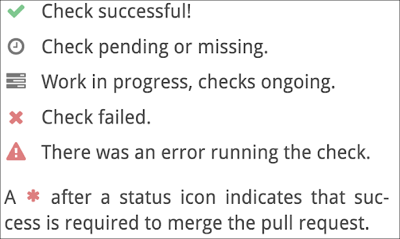
If you're a repo admin you can click on the small wrench icon next to the current review state to jump to the custom review completion condition editor in the repository's settings.
Also, if your PR branch is behind the target branch, you can merge the target branch into your PR by clicking the small merge button, next to the mergeability status. Repo admins can disable this feature in a custom review completion condition.
Changes
This item summarizes the changes you're currently looking at. The revision label indicates the revision that is the current right diff bound for all files, or r?? if it's a mix. If the label is red, then you have reviewed all files in your current diff but there are more unreviewed revisions that remain. Click to open the panel, and then click Show Unreviewed Diffs. Or, adjust the diff bounds manually yourself.
Click the item to open a panel with more details:

This is similar to parts of the changes summary box, but also includes a list of commits currently in scope.
Counters
The next three items on the toolbar are counters for files, discussions, and drafts. Red counters indicate that you must address the given number of items to advance the review. Grey counters indicate that other participants must address the given number of items, but you're in the clear. Grey counters with a red stripe indicate that you've deferred reviewing files or responding to conversations until others have acted, but otherwise work just like a grey one.
The counters take into account your unsent drafts, so somebody else may see different numbers on the same review.
The files counter displays the number of files that remain to be reviewed at the current diff bounds, either by you or by others. Click to cycle between these files (default keyboard shorcut: n). You're free to disregard these suggestions, of course, but if you find yourself doing so often you may want to check the review settings in the Changes summary box or customize your review completion condition, which also controls the per-file reviewed state.
If you can’t get things to work the way you want, have a look at issue #404 for a more thorough exploration of “to review” semantics and suggestions for alternative command bindings.
The discussions counter display the number of discussions that are waiting for your reply or that are unresolved. Click to cycle between these discussions (default keyboard shortcuts: j for next unreplied, ⇧J for next unresolved).
The main general discussion is always considered resolved.
The drafts counter displays the number of drafts you have pending, and also turns red if you have any buffered state such as review marks, disposition changes, or acknowledgements. Click to cycle between your drafts. You can publish all of your drafts and other buffered changes by clicking the Publish button.
Changes summary
This panel appears at the very top of the review page. The top line describes the current diff set you're viewing as succinctly as possible to help orient you. There's also a link to the pull request in the top-right corner..
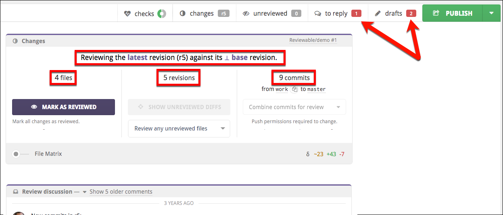
The panel is divided into three sections, and has some auxiliary file matrix controls at the bottom and may also have some unique styling if a review has been deferred.
Files
This shows the number of files currently in the review.
Any extra obsolete files have been modified at some point during the PR, but those are now the same as in the target base branch (so no further review of those files is necessary). They're usually hidden by default but you can reveal manually by clicking a small link next to the count. If you are in commit-by-commit review mode then obsolete files will still be selected for review for you, until you reach the commit at which they've become obsolete.
The Mark as Reviewed button will mark all files as reviewed—up to the current right-bound of the diffs. This doesn’t necessarily mean that you think the files are ready for merging, but rather only that you reviewed them and added all of your comments. After clicking this button, a small Undo link will appear beneath it for a while. (Incidentally, this is the only action in Reviewable that offers an explicit undo method of recovery.)
To mark files as reviewed individually, click the buttons to the left of the file name in the File Matrix, or in the file headers and at the bottom of unreviewed files.
Revisions
This shows the total number of revisions in the review. Each revision is an automatic, unmodifiable capture of one or more commits. You’ll find the commits assigned to a revision in the Review Discussion box, and also in the Changes drop-down at the very top of the page.
The logic for grouping commits into revisions depends on the review style, number of commits pushed at the same time, commit authors, etc. There are also some safety limits for how many revisions Reviewable will create at one time.
A provisional revision is tentative, since it may still change up to the point at which someone begins reviewing it. The intent behind provisional revisions is to permit the PR author to self-review the changes and push fixes without polluting the revision list. Provisional revisions are italicized in the file matrix.
An obsolete revision is one that is no longer part of the pull request due to a force push that changed the commit history. It will appear crossed out in the file matrix.
The Show Unreviewed Diffs button (exact wording varies) in this section will set the diff bounds on all the files to the next range that Reviewable thinks you need to examine. When you first load the review page, this button has in essence already been clicked for you — that is, the initial diffs will be what Reviewable thinks you should be looking at, not necessarily the ones that you were looking at on your last visit.
When applicable, you’ll find a small Show full diff link beneath the Show Unreviewed Diffs button that will show the full diffs between the base and the latest revision for each file. This will show you exactly the full deltas that will be applied if the PR is merged.
When there is more than on reviewer participating in the review, a dropdown with three review overlap strategy options will appear beneath the button. This setting changes which file diffs are suggested for the user to review and implicitly sets the default for any future reviews.
- Skip files claimed by others suggests files that have been previously reviewed by you, or that nobody has reviewed yet. Select this if you want to divide work by skipping files already reviewed by someone at an earlier version.
- Review any unreviewed files suggests files to review if they have not been reviewed by anyone at the current revision. Select this if you want to combine efforts and review any file that needs reviewing.
- Review all files personally suggests files you have not personally reviewed. Select this if you want to ensure that you review every file yourself, ignoring other reviewers.
Regardless of which option you select you will still be able to manually diff and review any file you want.
Commits
This shows the current number of commits encompassed by the pull request, along with the source (head) and target (base) branch names. You can easily copy the source branch name (e.g., to check out locally) or change the target branch of the PR if you have the necessary permissions. Click any of the other links here to open the corresponding GitHub page in the same tab.
The Review Style dropdown lets you choose the style of this review, affecting how commits are grouped into revisions and the suggested sequence of diffs to review.
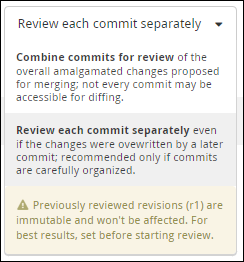
There are two review styles, and changing the style will require from a few seconds to a minute or so to restructure the provisional revisions in the review.
- Combine commits for review — review commits that are grouped together according to the time at which they were pushed and a few other factors. Keep in mind that some commits might not be accessible for diffing.
- Review each commit separately — a revision is created for each commit, even if a successive commit wrote over previous changes. We recommend choosing this review style only if the commits have been carefully organized. Keep in mind that there are some built-in limits on how many revisions can be created together. This means that commits may get aggregated if those limits are exceeded. Please contact support to discuss raising the limits for your repos if you feel this would be useful.
If you're a repo admin, you can also set the default review style for the repo via a small link under the dropdown.
Snapshotted revisions won’t get restructured, so you may encounter surprising results if you switch the review style after beginning the review. An exception to this is the case in which a revision was snapshotted only because somebody other than the PR author looked at it, in which case it appears snapshotted but is OK for restructuring. The purpose of this is to enable a reviewer to switch the review style, since just loading the page will show the diff and snapshot the revisions.
Labels
Any labels or milestones that have been applied to the PR appear in the Review discussion footer.
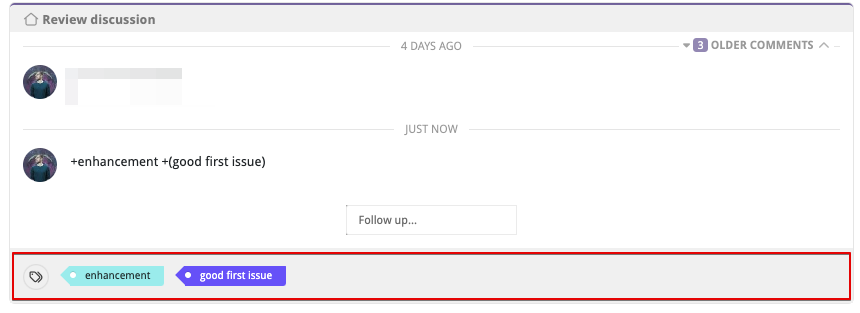
Participants Panel
The participants panel lets you quickly track the status of each individual that is involved in the review. Every information cell has contextual help with more details on its contents. Some cells may also have a dropdown menu with relevant actions that appears on hover. You can copy all usernames, or a subset of sorted usernames, by clicking the button. You can sort participants by each category using the button.

For each participant the following information is provided:
| Icon | Participant is: |
|---|---|
| is responsible for the next step of this review. | |
| is not being waited on in the review. | |
| is blocking the review from being approved. | |
 | says 'Everything Looks good to me!' |
| has approved the PR. | |
| has no status. | |
| is a requested reviewer. | |
| is assigned to this PR. | |
| is neither assigned nor requested. | |
| is an author of the PR. | |
| is a reviewer. | |
| is looking around without actively reviewing. | |
| is either an author of code within a commit or is a committer to the PR. | |
| has not made or authored any commits in this PR. | |
| is not yet active in the review. | |
| has pending comments drafted that are not yet published. | |
| has no pending drafts. | |
| is not engaged in any discussions. |
Participants Panel Actions
Discussions

If you have the necessary permissions on the repo, you can open the actions dropdown for another active participant and click dismiss from all in the drop-down, which will dismiss the participant from all unresolved discussions they are engaged in. You can undo this action until you publish.
Deferring a review
When you publish a review and you have files left to review or discussions left to reply (red counters), the review will be automatically deferred for you: the red counters will turn grey with a red stripe and the review will not be awaiting your action. This lets you post a partial review — perhaps requesting some larger design changes or putting off reviewing test cases — and visibly hand off responsibility for taking the next action.

A review will remain deferred until either a new revision of a file becomes available for you to review or a new comment is posted. When this happens, the review will be reactivated for you with all counters going back to being red (including for files or discussions you had deferred), and the review awaiting your action once more.
Note that you can continue manipulating a review as usual while it's deferred, except that Reviewable won't suggest the next set of diffs to review. If you wish, you can also reactivate a deferred review manually by clicking the continue review now button on the review page.
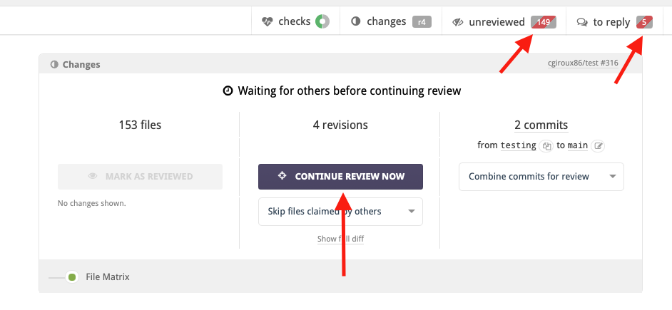
Sending an individual comment (via its dedicated send button) doesn't affect deferrals either way: it will neither defer a review, nor cause a deferred review to become active again.
Reviewing commit messages
Reviewable composes a system file used for reviewing commit messages. The commit file is denoted with a special commit icon prepended to its name and will always be listed first in the files list (matrix and review). This file will contain a list of all non obsolete commit messages that precede it, regardless of whether you're reviewing with the combined commits or commit-by-commit review style. It behaves just like a normal file in that it will be diffed against the selected revision and supports discussions, however it will not impact your repo or PR in anyway -- it's solely used by Reviewable for reviewing commit messages.
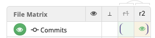
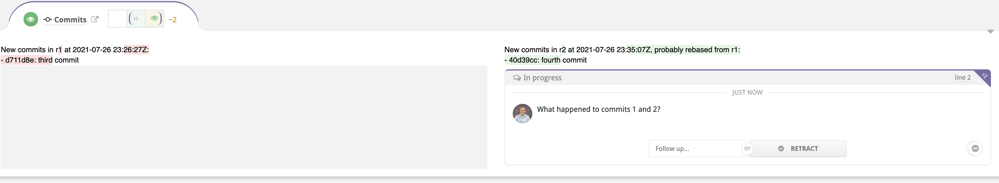
While the commit file is virtual, it still needs to be marked as reviewed as much (or as little) as normal files. It's included in review file counters, but not counted in review status messages unless it's the only unreviewed file. It's also handled separately from normal files when evaluating a custom review completion condition; see custom completion condition for details.
Keyboard shortcuts
There are a number of keyboard shortcuts available to power your way through a review. Type ? to display a popup that lists the current bindings. Learn how to modify the available commands and the corresponding keyboard shortcuts in the Custom key bindings section.
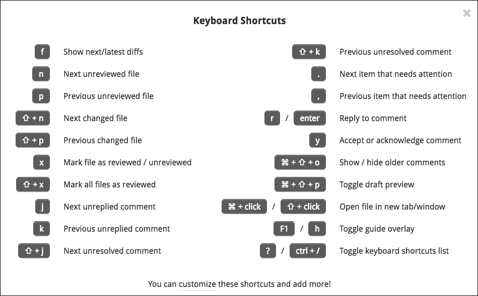
Code review files
This chapter explains in detail how you manage and review files in Reviewable. The file matrix provides an overview of the files in the pull request, while the individual file areas show diffs and line-specific discussions.
Revision cells
A file's evolution over the course of the pull request is summarized in both the file matrix and the file areas by a row of revision cells. Each cell represents one revision, with the leftmost ⊥ cell being a virtual base revision that changes to match the right diff bound. Colors and icons in the revision cells summarize what happened in the pull request at each revision, as well as the latest review marks.

The brackets in a row are the current left and right diff bounds for the file. To adjust the diff bounds, click on one desired revision bound and drag to the other one. You can also just click on a revision to adjust the nearest bound.

Mark as reviewed
One of Reviewable's core features is letting you track the reviewed state of each file at each revision, for each reviewer. This enables you to easily remember — and indicate to others — where you left off in the review and easily view only subsequent changes. Marking a file as reviewed doesn't necessarily mean that you think it's ready for merging, but rather only that you reviewed it at the given revision and added all your comments.

The small button to the left of the file path indicates your current reviewed state for the file at the right diff bound and lets you change it. Typically, as a reviewer, the button will be red to indicate that you need to review this diff, and will turn green when clicked to indicate that you've marked the file as reviewed. There are other less common states as well:
| Color | Meaning |
|---|---|
 | The file has not yet been reviewed at or after the right diff bound. Click to mark the file as reviewed. |
 | Reviewed by you at the right diff-bound. Click to immediately rescind your review marking. |
 | The file has not yet been reviewed at or after the right diff bound. Click to mark as reviewed, but marking is not advised because some unreviewed changes are not shown in the current diff, the review is deferred, or you are the author of the PR. |
 | Reviewed by you or someone else at or after the right diff bound. Click to mark as reviewed but it's probably redundant. |
Review marks remain in a draft state and are only visible to you until published. Recissions are publicized immediately however.
File matrix
Click the toggle to display a history matrix showing all files and revisions. Here, you can:
- View a summary of the PR's change history for each file.
- Set diff bounds for any and all files.
- Mark files as reviewed.
- View the most recent reviewers of each file.
- Jump to a file's diff.
- See delta stats for a diff and all diffs.

File list
The file matrix lists all the files in the pull request. They're organized hierarchically, with files listed before subdirectories at every level. Hover over a nested directory path to see the full path. Obsolete files that once had changes but now have no differences with the target branch are hidden by default, but can be revealed with a switch in the Changes summary box.
Click the file path to move directly to the diff for that file. Hold down the ⌘, Ctrl or ⇧ key (as appropriate for your browser) when clicking to open the file diff in a new browser tab. To open every file in a new tab at once, hold down the modifier key and click the All button that appears in the header of the file matrix.
File paths in italics indicate that the file is currently elided from the file contents area because there's nothing interesting to see in it at the current diff bounds, but clicking will force it to appear.
To the left of the file path there's a button to mark the file as reviewed.
To the right of the file path is a list of the last published reviewers for the file. It may be that those people did not review the latest revision, and other people may have reviewed previous revisions. Hover over an avatar for details about the user.
Off the right side of the matrix are delta stats for the current diffs, showing lines changed, added, and deleted. If a file is binary or isn't currently diffed no delta stats will be shown. The total of all displayed delta stats is displayed overhead, in the lower-right corner of the Changes summary.
Files can also be grouped, like for the Tests group in the screenshot above. You can use this to reorder the file list somewhat (groups are listed alphabetically), and to enable marking a subset of files as reviewed with one click. Reviewable will automatically group some files for you, such as files that were only renamed, that appear in a vendored directory, or that were reverted back out of the pull request. See the section on custom review completion conditions for instructions on how to make custom file groups in your repository.
Column headings
Each column in the matrix represents a single revision of each of the files in the review. Each revision consists of one or more commits. The headings vary in style to indicate the different kinds of revisions.
| Label | Meaning |
|---|---|
| r1 | An immutable revision (even if the branch is rebased). |
| r1 | A provisional revision whose commits may still change. |
| ~r1~ | Outdated revision, no longer part of the pull request due to being force-pushed out. Retained so you can still diff against it. |
| 👁 | A (virtual) last revision that you marked as reviewed for each file, defaulting to ⊥. You can click it to set the diff bounds to be between the last reviewed revision and the latest revision for each file, or drag-select to any other revision of your choice. |
| ⊥ | This is the base version for a file in the target branch of the PR. The exact commit may depend on the right diff bound if the pull request has been rebased. |
You can also drag in the diff header to bulk-select the diff bounds. Doing so in the header will set the diff bounds for all files as close as possible to the new setting. Many reviewers choose to set diff bounds this way instead of file-by-file to see one coherent set of diffs at a time.
File contents
Below the top-level discussions you'll find the file contents.
File header
At the top of each file diff panel there's a file path. Hold down ⌘, Ctrl, or ⇧ (as appropriate for your browser) to open it in a new tab. If the file paths are too long some may be collapsed in places with an …; hover over the path or swipe to expand and see the full path. You can also double-click on or near the path to select it — even when collapsed — for easy copying.
The header holds the standard mark as reviewed button and revision cells for adjusting diff bounds.
To the right of the cells you'll see the delta stats for the current diff, showing lines changed, added, and deleted.

Any special messages will appear immediately underneath the header. These include rename sequence details, explanations for why a diff isn't showing, etc.
File diff
In the File Diff panel, you can see the diff between the two revisions of the file currently set as the diff bounds. Deletions are indicated with a red highlight and additions with a green one. You can adjust the contrast in the account settings panel.
Most languages also get automatic syntax highlighting. If your file isn't getting highlighted, please open an issue so that we can add the right file extension mapping. If the language is not one of the 120+ that have syntax highlighting in highlight.js, you'll need to open an issue with that project or contribute a language definition module yourself.

In the gutter (either beside or between the diffs) you may see any of the following markers that indicate some otherwise invisible property of the adjoining line(s):
| Marker | Meaning |
|---|---|
⊥ | This line only has changes in the base branch, between the base commits corresponding to the current diff bounds. |
␣ | This line only has whitespace changes. |
| There are one or more resolved discussions on this line. Click to reveal. |
Reviewable only supports text file diffs at this time. For images and other file types you'll need to go view the diff on GitHub — a convenient link will usually be provided. You will still be able to post comments against such files but they won't be attached to a specific line.
If a file requires your review, you'll see a tab at the bottom of the diff to mark the file as reviewed and automatically advanced to the next file to review.
Diff layout
As you decrease the width of the browser window, the diff will convert from a side-by-side view to a unified view and vice-versa. Also, the code will automatically be wrapped at a reasonable, round number of columns proportional to the window width. (Lines that are wrapped get a thick vertical bar on the left side.)
You can override this behavior to shrink or expand the view using the small caret in the top right corner of every diff:
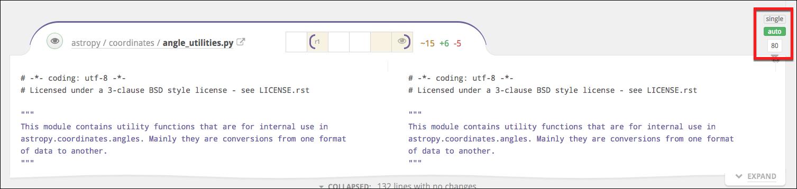
Drag the caret to manually set the number of columns at which to wrap code. If you do, Reviewable will always use this margin and show a side-by-side diff only if your window is wide enough. Click Auto to revert line wrapping control back to Reviewable. Finally, in either state, you can toggle on Single to force a unified diff view even if the window is wide enough to fit two columns.
All of these settings are personal but global across all files, PRs, and repos.
Collapsed sections
Reviewable will automatically collapse sections of the diff with no meaningful changes and no discussions. You can selectively expand these collapsed sections in a number of ways:

-
You can click the small Expand tabs on the right to manually reveal more context above or below the collapsed section, a few lines at a time.
-
If you see a small, light-colored declaration immediately below the collapsed section, this indicates the nearest syntactic unit that the code below is a part of — e.g., a function or a class. You can click this signature to expand the diff to show all of the syntactic unit.
-
In the collapsed section gap, you will see some subset of the following line counts. Clicking on any of these collapsed line categories will expand only those lines (plus a bit of context around them).
- No changes — lines with no changes at all between your current diff bounds.
- Whitespace changes — this is the count of lines in which only the whitespace has changed (marked with a
␣when expanded). - Base commit changes — are lines in which only the base branch has changed, likely not due to work on this pull request (marked with a
⊥when expanded) - Resolved discussion — are lines with resolved discussions attached (marked with a
when expanded).
- Click the Collapsed drop-down to view options for expanding everything — either for this file or all files. The toggle button selects whether to collapse whitespace changes in all files in this review. The setting will also be your default for new reviews.
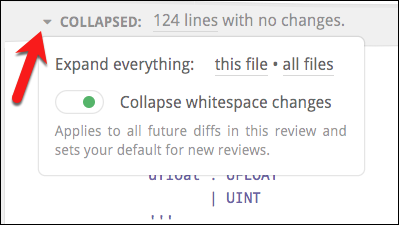
The only way to collapse expanded diff lines back down is to change the diff bounds.
Line-specific discussions
Click on any line in a diff — even one that already has a discussion attached to it or that is far away from any changes — to begin a new discussion. If you select some code first, it will automatically be quoted and copied into your message.
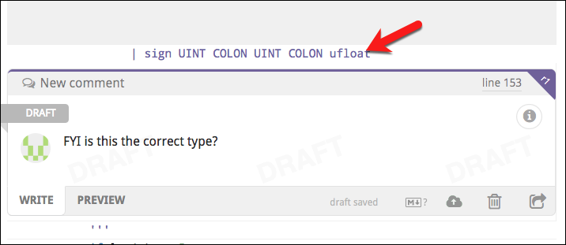
This new discussion will also appear in the diffs of other revisions, at the nearest corresponding line. It won’t disappear until that discussion is resolved or withdrawn, even if the underlying file changes drastically. Click the small purple dog-ear button to switch the diff to the exact one on which the comment was made.
If the dog-ear is red, this indicates that the current context may be inaccurate because of significant changes that have been made since the time the comment was made in the original revision. Click the red button to see the discussion in its original context.

Next to the dog-ear you'll find the line number that this discussion is on (relative to the file contents of the current diff), which links to GitHub's view of the file by default.
You can customize the line link to open your favorite editor on the given line instead.
For lots more information on discussions, please see the next chapter.
Diff customization
You can customize which files are diffed and how the diffs are displayed at the repository level.
Generated files
Reviewable will automatically detect many kinds of generated files and hide the diff by default. If you'd like to add a new common pattern (based either on the filename or the contents of the file), don't hesitate to let us know. If your generated files are specific to your project, you have two options:
- You can tweak your build to insert the exact text
GENERATED FILE DO NOT EDITas a comment on a line by itself into the generated file. There can be up to 4 additional characters on the line before and after the marker text. We have this restriction so that Reviewable doesn't accidentally consider your build script itself to be generated! - You can use
.gitattributesfiles checked into your repo to control diffing — see below.
Diff suppression and file type
Reviewable respects the diff settings in your .gitattributes files to the best of its ability. For example, to disable diffs for any files in the vendor directory and use PHP highlighting for all .phpt files, you could insert a .gitattributes file in the root of your repo, like this:
/vendor/** -diff
*.phpt diff=php
For details on the syntax, see the gitattributes reference doc.
Special states
The way diffs are displayed is subject to some special states, on both file-by-file and whole-review bases.
Diff-suppressing states
There are many situations in which a diff won't be produced for a given file — either to ensure good performance, or because it isn't sensible to do so. Some examples include:
- files that appear to be binary or minified,
- diffs that are too big or were taking too long to compute,
- files with too many lines,
- files with custom diffs specified in
.gitattributesthat Reviewable cannot respect.
In such cases, the file will appear together with a message explaining why the diff is missing. Typically, there will also be a button such as Try Again or View on GitHub by which you can override or bypass the condition.
Be careful if you’re trying to use ⌘-f or ctrl-f to find something in the diffs when some are not shown.
If diffs that make sense to be shown were omitted for some reason, you'll find a special notice above the first file diff that explains what happened and lets you override the decision. (See screenshot below.)
Single file mode
Reviewable automatically enters a single file mode to preserve performance when the number of visible files exceeds a threshold (25 files as of this writing). In this mode, only one file will appear at a time. You'll also see a summary explanation just above the first (and only) file diff, together with a button which you can click to force all files to appear anyway until you leave the page.
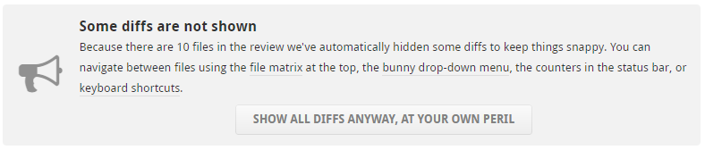
Single-file mode is similar — but not identical — to the mode that you enter when you ⌘, Ctrl, or ⇧ click a file open into a separate tab.
This panel will also appear if any diffs were throttled or big diffs were elided from display. However, in those cases the page will remain in multi-file mode. The text in the panel will also reflect the specific conditions.
Support for specific workflows
Reviewable has extra built-in support for some specific development workflows.
Rebasing
Reviewable gracefully supports rebasing and force-pushing to your branch PR in the middle of a review. Previous revisions are preserved and marked as obsolete (with a strikethrough), even if the commits they’re composed of have disappeared during the rebase. You’ll still be able to diff against those revisions, and changes between the old and new base will automatically collapse in the diff so as to avoid distraction from deltas that don’t relate to this PR.
To avoid garbage collection, Reviewable pins these commits in your repo using special refs under refs/reviewable — as long as the repository is connected.
Reviewable also uses heuristics to match rebased commits to their ancestors using commit messages. When successful, this enables Reviewable to suggest minimum-delta revision pairs for diffing in the “review each commit” style even if you reordered the commits. Arcs that link blocks of revisions above the file matrix show a high-level overview of this mapping. (We don’t show matches between individual revisions because that can quickly lead to an unreadable diagram.)
By design, Reviewable doesn't track files that haven't deviated from their base form — including files that have been modified back to their original state. However, when using heuristics, Reviewable will sometimes "force" a revision when it otherwise wouldn't to prevent you from missing a critical diff. When applicable, revision cells in both the file matrix and file header will also have a unique styling.
| Symbol | Meaning |
|---|---|
 | Inner Disc Color: File action against matched prior rebased revision. Outer Background Color: File action against immediately preceding revision. In this example, r6 is not modified compared to r4, but is modified compared to r5. |
Forked repos tracking upstream changes
Some advanced workflows require overwriting the target branch of a PR with the head branch when it's ready to merge. This is necessary, for example, if you're maintaining a fork and rebasing from the upstream master. In such cases, both GitHub and Reviewable will choose the wrong base commit to compare files, and display not only all of the upstream changes—but also all the extra changes made in your fork over time.
To get the diff that you want, add a Merge manually by overwriting target label (exact spelling!) to your PR. This will cause Reviewable to compare files against the current head of the target branch. Now, you'll see upstream changes and any conflicts you resolved during the rebase, while leaving out modifications in your fork that survived unscathed.
For best results, add the label to the PR when you first create it.
Code review discussions
Review participants engage in discussions about the changes proposed in the pull request. A discussion is unresolved until it meets resolution criteria that corresponds to the dispositions of the participants. Any discussion will remain in place until it is resolved by the participants — irrespective of whatever changes occur to the files in the PR. A discussion may also be unreplied for specific users; this state is independent of the discussion being resolved or not.
This chapter covers all types of Reviewable discussions, including the general discussion, other top-level discussions, and all the various line-specific discussions that occur among all review participants.
All draft comments (except ones you're still Pondering), pending acknowledgements, disposition changes, and dismissals will be published along with the review. Learn more in the Publishing section.
Each comment indicates its author via an avatar, over which you can hover for more details. You can use the browser's find in page feature to search through all the comments for all instances of the author’s name or username. This technique will work even though the names and usernames aren’t actually visible on the page.
Starting a new discussion
You can start a new discussion by clicking on a diff line, as explained here. If no diff is available for a file for some reason, you can also start a file-wide discussion by clicking on Start new discussion under the file header instead.
For discussions that are not specific to a file, click the Start a new discussion button at the bottom of the top-level discussions area (below the general discussion). Typically, you would begin a top-level discussion if you want to have a distinct file-independent thread in which you can track the disposition of participants and an eventual resolution. You may also want to do it just to separate a thread out, even if you don't care about resolution.
Replying to a discussion
At the bottom of each discussion box you can write a comment to add to the discussion. The draft is saved continuously as you write, but won’t be visible to others until it's published or sent (see below).
While no one can read your drafts, other participants will be able to see that you have unsent drafts pending and how long ago you last touched the review (for example, by editing a draft).
All comments are formatted as GitHub-flavored Markdown — clicking the small Markdown logo in the draft toolbar will open a reference page. You can also switch to the Preview tab at any time to check how your comment will be rendered.
You can add images to your comment by clicking the upload button, by dragging an image onto the draft, or by pasting an image from your clipboard (in some browsers). MP4 and MOV video uploads are also supported, with a maximum upload size of 100MB for Enterprise users and 10MB for SaaS users. If desired, you can delete your draft by clicking the small trash icon. The trashed draft is retrievable by creating another comment in the same spot.
Sending messages immediately: Click the button to immediately post the comment on the pull request. This doesn't affect any other pending comments, which is useful if a big review round is in progress, you have many drafts pending, and you need to send out an intermediate clarification or request. Since each recipient will receive an alert for each message you send this way (as configured by default in GitHub), it would normally be preferable to write all of your comments and then publish them all together.
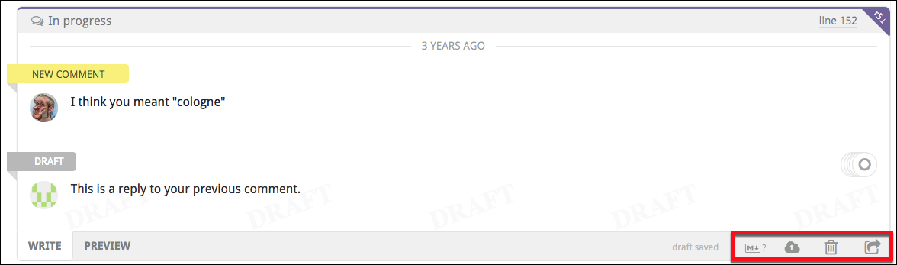
Inline directives
You can add special directives inline to any comment (not just top-level ones) to add or remove labels, set the milestone, and add or remove assignees or reviewers. Reviewable doesn't use a special UI for this so that it's easy to do without lifting your hands from the keyboard, works in all contexts (including when replying by email or on GitHub), and leaves an easily readable record.
The directives you can use are ±label, ±milestone, ±@username (for assignees) and ±reviewer:@username (for requested reviewers). Reviewable will warn you about invalid assignees or reviewers — either directly or via email if necessary — but not about bad labels or milestones since false positives are too common there.
For email and GitHub comments, if the repo is not connected then directives won't take effect until somebody visits the review in Reviewable. Editing directives in a previously sent message won't work either.
Replying via email or on GitHub
Reviewable will do its best to parse incoming messages and split them up into the appropriate comment threads. This only works well, however, if you leave all the separators and comment links in place so be sure not to mangle a quoted message too much in your reply. Quoted chunks will be shown in Reviewable if they are woven into your reply, but omitted otherwise (whether the message is top- or bottom-quoted). Any parts of the message that can't be conclusively tied to a specific discussion will show up in a top-level comment instead.
Reviewable recognizes a number of case-insensitive shorthands in external comments. You can reply with the single word acknowledge (or ack) to simulate clicking the primary button in Reviewable (whatever its label might actually be). You can also update the disposition in your reply by inserting on a line, by itself, Discussing, Satisfied, Informing, Working, or Blocking.
For information on how to use other shorthands that work in email and in-app comments alike, see inline directives above and initial keywords further down.
Ending a discussion
If you don't need to reply to a discussion you can click the primary action button at the bottom instead. The button's label will indicate its precise action — corresponding to both your role and the state of the discussion — but the general meaning is “I have nothing further to say about this”. Clicking the button will always mark the discussion as read, and usually set your disposition to Satisfied as well:
| Role | Discussion | Button label | Effect |
|---|---|---|---|
| Informing | Resolved with no other participants | Retract | Sets disposition to Satisfied |
| Informing | Resolved | Conclude | Sets disposition to Satisfied |
| Active participant, not Satisfied | Unresolved with no other participants | Retract | Sets disposition to Satisfied |
| Active participant or PR author, not Satisfied | Unresolved and switching to Satisfied would resolve | Resolve | Sets disposition to Satisfied |
| Working | Unresolved | Done | Sets disposition to Satisfied and creates a "Done." message |
| PR author | Unresolved and nobody Working | Done | Sets disposition to Satisfied and creates a "Done." message |
| Blocking | Unresolved and nobody Working | Accept | Sets disposition to Satisfied |
| Any | Unread comments | Acknowledge | Sets disposition to Following if passive participant or not a participant |
Unreplied discussions
A discussion is unreplied for you when there are comments in the discussion that you haven't acknowledged, replied to, or marked as read. Unreplied discussions will increment your red discussions counter for the review. A discussion is also unreplied for you if one of the following rules applies, but none of the preceding rules apply to anybody else, even if you're caught up on the comments.
- You are an active participant, or are Mentioned, or you are the PR author, or one of the participants is Informing, and you have unread comments, or you are Working.
- You are the PR author and the discussion has only one active participant (which is not you). This applies even if you have no unread comments; that is, you acknowledged the discussion without replying.
- You are not the PR author, the discussion has only the PR author as the active participant, and you have unread comments.
- You are Blocking and the last comment is not yours.
- You are Discussing and the last comment is not yours.
- You are Blocking.
- You started the discussion, and remain an active participant.
- You are an active participant.
If you have a draft reply to a discussion, the discussion is considered replied unless new comments were made since you last edited your draft. This is the case even if the draft state will cause it to become unreplied for you once published. Your published state is still used in the view of all other participants.
New and old comments
The yellow New comments ribbon demarcates the point where comments that are new to you begin. Normally they'd lose their “new” status implicitly once you reply or click the primary action button, but if you don't want to do that yet for some reason you can hover over the ribbon to reveal a mark read link instead.
Marking comments as read (by any means) is also buffered as a draft and revealed to others only when publishing. This avoids situations where a discussion shows up as unreplied to somebody else before your reply was published.

Some older comments may be hidden, as indicated by the N older comments label in the upper right corner of a discussion. Click the icon to show the previous comment for this discussion, or hold your click before releasing to show all older comments in the discussion. For more options, click the drop-down arrow to reveal options for displaying or hiding all older comments in this discussion, this file, or the review.

Dispositions and resolution
When publishing comments in the discussion you’ll want to take note of your disposition, which indicates your attitude towards resolving the discussion. You take on a default disposition when you join a discussion and, to begin with, you’ll simply rely on these defaults and the normal action buttons. As you participate in more discussions, you may eventually decide to explicitly set your disposition or even change the defaults that Reviewable uses in various situations.
To commit disposition changes they must be published — even if you make no corresponding comment. Disposition changes do not mark the discussion as read unless they are part of a reply.
These are the dispositions that make one an active participant in a discussion and that you can select explicitly (though not all may be available in every situation):
- Discussing — Neutral on whether the discussion should be resolved; will possibly continue the discussion.
- Blocking — Opposed to resolving the discussion while waiting on another contributor.
- Working — Keeping the discussion unresolved while working on a related task This differs from Blocking, in that you remain the party responsible for moving the discussion forward, and the discussion will not ask for actions from other participants.
- Satisfied — In favor of resolving the discussion. If there are no other participants, then the discussion is resolved and will not be brought to the attention of others.
- Informing — Discussion is resolved, but left active for others to comment.
Passive participants will exhibit other dispositions, such as Following, Mentioned, and Dismissed. Another special disposition is Pondering, which indicates that you're still thinking about an issue and your draft will not be published.
A discussion is resolved if and only if at least one participant is Satisfied or Informing and none of the participants are Working or Blocking, or if there are no active participants left. (Participants whose disposition is Discussing are abstaining from the decision.)
If you have draft state on the discussion (as in the case of a reply, for example), the proposed value is used when computing the resolved state in your view.
Participants in the general discussion have no dispositions, and it's always considered resolved. Other top-level discussions created by clicking the Start a new discussion button behave normally.
Checking and changing dispositions
Your avatar in the lower-right corner of every discussion box has a small icon that indicates your current disposition. Hover over it (or swipe left) to show the avatars and dispositions of all the participants in the discussion. Click on your avatar to change your disposition, or on another participant's avatar to see a description of their current disposition.

You can also change your disposition as you're writing your comment without touching the mouse. When you create a new draft notice — before you begin typing — the small list of disposition mappings in the lower-right corner of the draft box. These are some examples of what you'll find there:
- FYI or Tip → Informing
- BTW, Minor or Nit → Discussing
- Working or Will do → Working
Starting your draft with one of these words will switch to the corresponding disposition, letting you keep your hands on the keyboard. However, any manual change to the disposition will permanently override any keyword in the draft text. If a word was accepted it will be highlighted in yellow; if it was discarded it will be crossed out. Either way, you can click on it to get a short explanation of what happened.
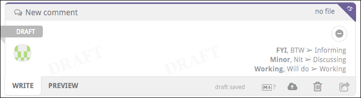
If you find yourself using these words to switch dispositions accidentally, you can disable the feature altogether in the panel accessed via the small settings icon in the top-right corner of any of your disposition dropdowns.
You can also assign disposition changes to keyboard shortcuts with the setCurrentDiscussionDisposition command.
You may find it necessary to dismiss a user from a discussion — if, for example, the user isn't responding, has gone on vacation, or has left the organization. If you have the necessary permissions on the repo, you can open the disposition dropdown for another active participant and click either Dismiss from this discussion or Dismiss from all discussions at the bottom of the drop-down. Or if the discussion's disposition is satisfied, and you have started a draft, you may dismiss all blocking reviewers by clicking a dismiss dissenter(s) link on the top right side of the draft, to the left of the grouped avatars. (By default, anybody with write access to the repo can dismiss another participant, but you can change this in the repo settings.)
Resolution workflows
By default, a comment that creates a new discussion will set your disposition to Blocking if you're a reviewer, or to Discussing if you're the pull request's author. Your first reply to an existing discussion will set your disposition to Discussing if not already an active participant. You can change the default disposition to fit your workflow preference.
For example, if you're following an informal review process, you may want to set the default disposition of your reviewer-initiated discussions to Discussing, which enables the author to resolve a discussion directly.
There are 4 default dispositions (the combinations of author/reviewer and new/reply), and you can set each one individually. The disposition dropdown has a Change default disposition link at the bottom that, once clicked, will lock in your next selection as the default for situations like that of the current comment. (For clarity, the link will change to a description that states which default you're setting.)
If you are Discussing and another participant resolves the discussion without writing a comment, you normally won't be notified about it and the discussion will simply disappear from your view. If you'd like to double-check such resolutions without having to block the discussion, you can turn on Trust but verify mode via the small settings icon in the top-right corner of any of your disposition dropdowns.
Reviews dashboard
Click the Reviews button at the very top of the page to display the reviews list. Here, you'll find all open pull requests in which you are a participant. As a participant, these PRs have either been created by you, assigned to you, contain comments from you, or mention you (or a team you belong to). Reviewable automatically updates this list at least once per minute (and data held in Reviewable is updated in real time), so there's no need to reload the page.
If PRs appear to be missing from the list, try clicking the Include stalled pull requests/reviews link at the bottom of the panel. You may also want to click the green Also show team reviews or Also show private reviews buttons at the bottom if they're showing and you haven't yet granted those permissions. Finally, if PRs are still missing, check whether the relevant organizations have OAuth app access restrictions turned on.
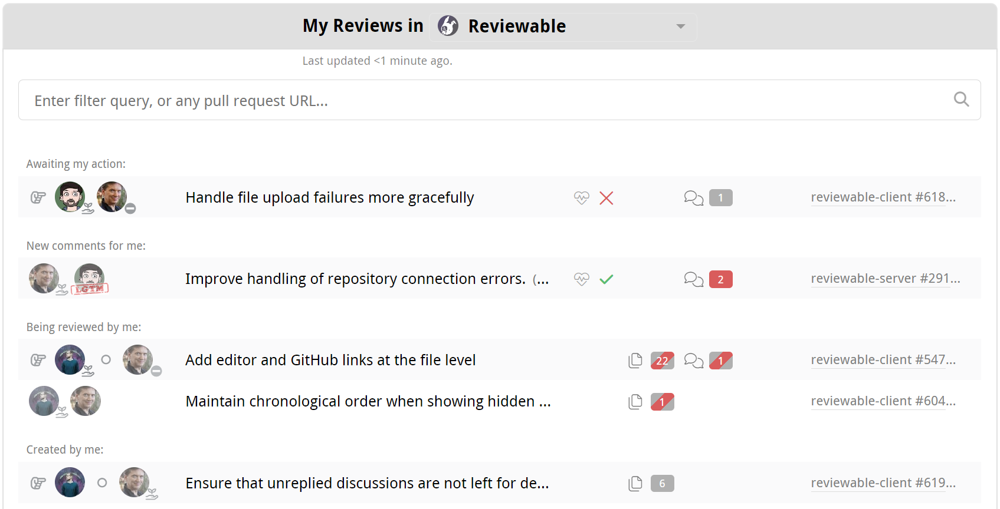
PRs are sorted into groups ordered from most to least relevant. Within each group, PRs are sorted in chronological order. The exception is that in the Waiting on me group, the PRs that are only waiting on you appear before others. The intention is that the PRs appear in the order you ought to deal with them. You cannot change the sort order, but you can filter the list instead (see below for details).
You can constrain the list to a specific organization by selecting it from the dropdown menu in the panel's header. Your selection will be automatically saved for future visits. You can also view all of the PRs in a specific repository by clicking one of the “N open reviews” links on the Repository page.
Loading the list of reviews for a single organization or repository will be much faster than doing so for all your repositories.
You can further modify the view with the various toggles and filters on this page. If a specific pull request isn't showing in the list, you can simply paste its URL into the filter field to access it directly.
Up to three closed PRs from the previous three days may also be shown here. This makes it easier to follow-up on recently completed reviews. Enter +open in the search bar to hide the closed PRs. To show older closed PRs click Show more concluded reviews at the bottom of the panel, repeating as necessary.
Review state
Each review in the listing indicates the state of the review, in more-or-less real time. The author of the PR is shown first. People whose attention the review currently needs are show to the right of the , while other participants follow the . You can see the approval status for each reviewer ( approved or changes requested), as well as the pull request summary, current milestone, and labels (if any).

The icon indicates that the repository for this PR is not connected to Reviewable and the review will update on demand only. In such cases, the counters may be out of date. An administrator can connect the repository from the Repository page.
A icon indicates a stalled review that has not been updated in over two weeks.
Counter reflect the same information as you'll see on the review page:

If a PR is ready for merging, the status checks are successful, and all the counters are zero, then a merge button appears in the state column instead. This lets you quickly merge completed PRs but doesn't give access to merge options — for that, please open the review page.
Other possible states include Merged, Closed, and Archived (automatically, for old reviews — just open to unarchive). No state appears for any PR not yet connected to a review.
Open a review
Click on a PR to open the review, or hold down the appropriate modifier key to open it in a new tab. If a is shown, clicking on the listing will open a new review and insert a link into the description for the PR. If is also shown, this may begin a free trial.
Click the link on the right end of a listing to access the pull request on GitHub.
Filter reviews
In the filter field, enter one or more terms to match in the PR summary, repository, number, milestone, labels, author username, or blocking reviewer. The query is immediately reflected in the URL if you'd like to bookmark it.
You can also use the special filters in the table below, adding either a + or - prefix to the special term (such as +open) to require or prohibit the specified condition respectively.
Add an OR operator to the positive filter by entering a comma. For example, +needs:review,needs:fix will filter for all reviews that need work, or have a failing check. For negative filters, the comma functions as an AND operator. More complex boolean expressions are not supported.
For the ±label:name filter, you must use double quotes around the label name if it contains spaces.
| Filter | Meaning |
|---|---|
±open | Currently open PR |
±red | PRs with red counters |
±deferred | PRs with deferred counters |
±mine | Created, assigned, and requested PRs |
±label:name | PRs with given label |
±needs: | |
review | Incomplete reviews |
fix | Reviews with failing checks |
merge | Completed and clean reviews |
me | Reviews waiting on you |
author | Reviews waiting on author |
reviewer | Reviews waiting on a reviewer |
±am: | |
author | Created PRs |
assigned | Assigned PRs |
requested | Requested reviewer PRs |
±draft | PR draft, not yet fully open |
±merged | PR that was successfully merged |
±closed | PR that was closed without merging |
±public | PRs from public repos |
±private | PRs from private repos |
±starred | PRs from repos you starred |
±watched | PRs from repos you're watching |
Click the small Set as your default link to set the query that will automatically be applied when you load the page.

If shown, you can click the Include stalled pull requests/reviews link near the bottom of the panel to exclude or include any stalled PRs. The current state of this toggle is reflected in the URL, so you can bookmark it.
Other toggles
At the bottom of the Reviews page, you’ll find two toggle buttons:

Show pull request not yet connected to Reviewable
If this toggle is on, the list will include PRs for which a review has not yet been created. Such a PR will be indicated with the , and clicking that PR will connect that PR to a review and insert a link into the PR description.
You may want to turn off this toggle if you only want to see PRs from connected repositories.
Also show pull request you’re not involved with from all repos to which you can push.
If this toggle is on, the list includes all open PRs from repos where you have commit privileges, even if you're not a participant. This is useful if you need to monitor repos for incoming PRs, such as if you're a manager, or an admin on an open source project.
Optionally, you can restrict this set of repos to only those repos connected to Reviewable, or that you watched or starred on GitHub. This can be useful if you have push permissions to a lot of repos and, for example, you don’t want to see random open source repos while at work.
Account Settings
When signed in, click your username in the upper-right corner to view the account settings dropdown. Here, you can manage your global settings, and customize your Reviewable environment.
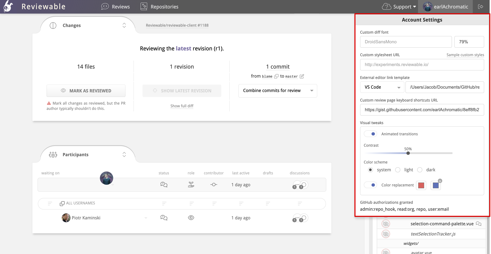
Custom diff font
You can customize the font used in all the diffs. The font must be monospace, exactly match the font name, and already exist on your machine. Specify the font size in a CSS format, such as 10pt, 1.2em, or 90%. If the font can't be loaded Reviewable will fall back on its built-in one.
Custom stylesheet
You can point to a custom stylesheet that you want to apply to all diffs. Reviewable uses highlight.js, so you might prefer to use one of those predefined styles that can be found in their styles directory. To use the GitHub style, for example, set the URL to https://cdnjs.cloudflare.com/ajax/libs/highlight.js/8.2/styles/github.min.css. You can also create your own styles.
Ensure that the stylesheet is served as text/css. It may be necessary for you to use https://raw.githack.com or another similar service.
We also have a few extra styles used to highlight tabs, trailing whitespace, and lack of final newline that you can customize:
.tab, .no-newline, .trailing {
color: #D95C5C;
}
.tab:before {
content: "\00bb\00a0\00a0\00a0";
}
.no-newline:before {
content: "\00a0\20e0\23ce";
}
By default, only the actual deltas have red/green highlights in two-column mode. If you'd like the whole line to be highlighted as well (like on GitHub) you can add the styles from this example.
See more snippets at visual tweaks.
External editor line link template
You can specify the file path to your git repos directory for the external editor line link that appears in the upper-right corner of discussions.

You can use this to open the file in your favorite editor on the specific line that is under review.

Your editor must support a custom URL scheme for linking to files to use this feature. Reviewable assumes that /directory/with/repos is the absolute path to the directory where your git repos live, and also that each repo directory is named the same as its repo.
There are a few caveats for specific editors:
- Sublime Text: You must install an appropriate URL handler.
- Emacs: You must install the Emacs URL Handler on OS X.
- Atom: You must install the Atom Handler on OS X.
- Eclipse: You must install the OpenInEclipse script on OS X, or follow the instructions for Linux. If you know of solutions for Windows, please let us know!
- IntelliJ IDEA, Android Studio, PyCharm, PHPStorm: Should work on OS X, but not confirmed for other platforms.
Custom line link template
You can also specify a custom line link template by choosing the Custom option in the dropdown. If you would like to base your custom template on one of the available editor templates, first select that template in the dropdown and then select Custom.
For example, if you initially select VS Code and then select Custom, the following template will populate the template field:
vscode://file//directory/with/repos/{{repo}}/{{path}}:{{line}}
If you have entered your /directory/with/repos/ path, it will automatically carry over to your new custom template.
You can use these variables in your custom URL template:
{{owner}}: the repo owner (or organization) username.{{repo}}: the repo name.{{pr}}: the pull request number.{{path}}: the full path to the file (does not start with /).{{sha}}: the commit sha of the latest revision in this review.{{line}}:the line number in the latest revision of the file that best represents the original context in which the comment was made.{{viewLine}}: the line number in the revision in which the discussion currently appears. This is the number that appears in the top-right corner of the discussion. Not available for code blocks.
Typically, you'll want to edit and load the latest version of the file into the editor, so you probably want to use {{line}} rather than {{viewLine}}. If you need any other variables for your template, please let us know.
Custom key bindings
You can customize the key bindings for common commands, and add new ones for commands that aren't bound by default. First, get a copy of the default bindings file and put it somewhere accessible on the web (such as a gist). Edit this file according to your preferences; all available commands are given in the file, though not all are bound by default. You can use any key combos supported by Mousetrap. If your favorite command isn't listed, please open an issue so we can add it.
When you're done, point Reviewable to your custom bindings file by entering its URL in the field. If you're using a gist, make sure to get the “raw” URL, and consider removing the commit SHA from the path to always point to the latest version.
Your bindings will be loaded and applied right away, and the cheatsheet will update accordingly to reflect them. Be sure to check the browser's console if they don't appear to work, since any errors will appear there. To load any updates to your file, either reload the page or make a no-op edit to the URL field.
Visual tweaks
Click the Animated transitions toggle to turn animated transitions on and off throughout the UI.
Adjust contrast
Use the Contrast slider to adjust the UI contrast. Currently this only affects the red and green diff highlighting in reviews, but may be used for other UI elements in the future as well.
GitHub authorizations granted
This is a read-only list of all the GitHub OAuth scopes you've granted to Reviewable so far. It can be useful to confirm the extent of permissions granted or when debugging GitHub API issues.
Repositories
The Repositories page lists all of your repos. From this page, you can connect Reviewable to Github repositories, adjust the connections' settings, and manage your Reviewable subscriptions (for which, please see the next chapter).

The repositories are grouped by owner and listed alphabetically. If you don't see an organization of which you're a member, ensure that you click Show all organizations if it's there. If the organization is still missing, check whether you need to request approval for Reviewable from your organization owners.
Security concerns
First off, Reviewable will never store your source code on its servers. Each session will fetch the code directly from GitHub into the browser over a secure HTTPS connection. For transparency, here’s a non-exhaustive list of the kinds of data stored on Reviewable's servers:
- Comments, including drafts.
- Pull request metadata, such as filenames, and commit and file SHAs.
- Basic account data, such as ID, username, and email address.
- The OAuth access token that you authorized (encrypted for extra security).
- Repo permissions and organization memberships.
- Settings for all levels: organization, repository, user, and review.
- Subscription data, but only the last 4 of the credit card and expiration date are kept.
- Issue titles, commit messages, and GitHub branch protection settings are cached and flushed regularly.
Access is controlled by a set of standalone security rules that are enforced directly by the database. Access permissions are inherited from GitHub and rechecked every half hour. All data is always transmitted across secure connections.
The access token remains encrypted at rest with a key known only to Reviewable servers, and used only to access GitHub on your behalf. Unless you grant explicit written authorization, Reviewable staff will never use the token to access your repository contents or mutate data. (We may use it to test innocuous read-only metadata API calls when debugging an issue specific to your account.)
Reviewable does need write permissions for your repos. See the GitHub authorizations section for a full explanation.
And of course under no circumstances will we disclose any of your private information to other parties beyond what's needed to provide our service — please see our terms of service and privacy policy for the legal details.
If you need more details about our security architecture or have any other concerns we can address, please contact us at support@reviewable.io.
Connecting repositories
The indicator next to each repository name shows the connection state for this repo. While a repo is connected, Reviewable automatically creates a review for any open PR and inserts a link into all open PRs in the repo.

The toggle's color reflects the state of the connection:
- Black — The repo is disconnected. Reviewable will not automatically create reviews for this repo, but it is possible to initiate a review from the Reviews dashboard.
- Green — The repo is connected and healthy. Reviewable will automatically create and update reviews for all open PRs and insert a link to the review into the description for each PR. (You can customize this latter behavior in the settings, but must do so before connecting the repo!)
- Red — The repo was connected, but the connection is now broken. Look for the error message on this page. Though some reviews may be created under this condition, it is necessary to fix the problem to ensure all reviews function properly.
You must have repo admin permissions to connect or disconnect a repo. Connecting to a private organizational repo may cause you to automatically begin the 30-day free trial.
It is entirely safe to connect or disconnect a repo at any time without risk of data loss. After a review is created, it will not be affected by this toggle.
If you previously connected repos, but later revoked the authorization for Reviewable, you will need to re-authorize access to maintain the connection. You will see messages at the top of the repo page that prompt you to take action.
If a user has connected a repo but later leaves an organization, it will be necessary for another admin to toggle the repo off and then on to assume control of the connection. (Reviewable will send a warning email to the original connector if it detects this situation.)
Each connected repository will have an "N open reviews" link under it that will take you to a repository-specific reviews dashboard.
Connect all current and future repos
There's also a special All current and future repos toggle. When turned on by an organization owner, Reviewable will connect all current and future repos in this organization and automatically create reviews for those repos. Reviewable will not connect any repos that were previously manually toggled off.
You may wish to confirm the settings of current repos and designate a prototype repo for future ones before you turn on this feature. By default, Reviewable will insert a link into all open PRs in all repos unless you've changed this setting beforehand.
Create reviews for your own PRs
You can also get Reviewable to create reviews for all PRs that you author, across all repos. If the My PRs in any public repo toggle is on, Reviewable will regularly scan your public PRs and create reviews for them (inserting a link into the PR), covering all of your open source contributions.

The same applies to private PRs for the My PRs in any private repo toggle, which gives you the flexibility to have only a subset of users in a private repo use Reviewable.
This last is a legacy feature that may get removed in the future, since it was mainly used to constrain the set of contributors to avoid going over quota, and this can now be specified directly in a subscription's configuration. It will only work if the relevant repo has an active subscription at the time the PR is created and won't backfill if a subscription is created later.
Reviews in connected vs unconnected repos
When you connect a repo, you get links to the reviews from all PRs in that repo and immediate updates whenever anything changes in GitHub.
By contrast, Reviewable doesn't get write access to the repo if you individually connect all your own PRs or create ad-hoc reviews via the dashboard. There are some disadvantages to this approach:
- New commits, GitHub comments, labels, and the PR assignee don't immediately sync with the review, but will only synchronize after somebody loads the review. The dashboard will display stale information for such reviews. Comments posted in Reviewable will propagate immediately.
- Assignee and label directives in GitHub and emailed comments won't apply until a user loads the review.
- Review status checks won't post to the PR, since Reviewable isn't subscribed to repo events and unable to make timely updates.
- Reviewable may not be able to reliably detect and apply your branch protection settings in its UI. (The branch protection settings will be enforced by GitHub no matter what, though, so this is safe but potentially confusing.)
- It may not be possible for Reviewable to pin revision commits, so if you use
git rebaseandgit push --force, some of them may get garbage collected and will no longer be accessible in the review. They'll usually get pinned when the reviewer (with push authority) accesses the review.
Though the differences above may be minor, it's much more convenient and reliable to connect a repo directly.
You may find it impractical to use Reviewable for all PRs, especially for small changes. While every pull request from a connected repo will automatically display a button that links it to a Reviewable review, you can simply ignore it and conduct the review in GitHub. Reviewable will close the review when you close the PR. However, if the PRs are in a private organizational repo, each review will count against your contributor maximum — whether you use it or not.
Repository settings
Click on a repository name to access the repo settings panel. This works whether the repo is connected or not.

If you make any changes to the settings, click the Apply button at the top of the page to commit your changes for the repo you originally chose. Click the adjacent dropdown button to view a panel for specifying additional repos to which these settings will be applied (all the settings, not just your current changes). Click Cancel to discard any change to the settings.
Prototype settings for new repos
If you are an organization owner, you can set a repo as the settings prototype for any repos not yet accessed or created. Simply click the Set as prototype for new repos button and new repos will get a copy of the prototype's settings the first time Reviewable accesses them.
This feature is particularly useful if you chose to connect all current and future repos.
Reviewable badge
Choose where the Reviewable badge is to be inserted on the GitHub website:
- Description — at the top or bottom of the description for the PR. This is convenient since the link will be in a consistent place. However, manual edits to the PR immediately after it's created will race, and might occasionally cause the edits to be lost.
- Comment — in a new PR comment. Optionally specify who should be the author of the comment (organization members with access to the repo only). Otherwise, this defaults to the repo connector or review visitor.
- None — no badges will be created (private repos only).
Changes here are retroactive (except that an existing description badge won’t be moved to a comment), but will be applied lazily as reviews are visited.
Default review style
Choose the default review style for all reviews in this repo. The choice here affects how commits are grouped into revisions, and the suggested sequence of diffs to review. Please follow a link for a full explanation of the two options.
This setting can be overridden on a particular review by any user with push permissions.
Approve button output
You can customize the function of the Approve button (aka LGTM button), which appears on the general discussion when the conditions are right. You can customize what will be inserted into the draft when you click it. By default it inserts :lgtm:, which renders a custom LGTM (Looks Good To Me) emoji. But, some teams customize it to insert a form, or a different approval message. The button also always sets the publication status to Approved.
Discussion participant dismissers
This setting controls what permissions a user needs to have to be able to dismiss participants from a discussion. By default, anybody with write permissions can do so but you can limit it to only repo admins if a stricter approach is desired.
Review status in GitHub PR
This setting determines whether or not to post the current completion status of the review as a status check on GitHub. Choose On for visited reviews to post only after a review has been visited at least once in Reviewable.
Code coverage
You can configure Reviewable to display code coverage information next to diffs by letting it know where to fetch code coverage reports from. You'll need to enter a URL template that Reviewable can instantiate to grab a report for all the files at a given commit. The template can make use of these variables:
{{owner}}: the repo owner (or organization) username.{{repo}}: the repo name.{{commitSha}}: the full SHA of the target commit.
If needed, you can also specify one additional header to send with the request. This will typically be an Authorization header that passes some kind of access token to enable access to private coverage reports.
The URL template will be available to all users with read permissions on this repo, so make sure to put any sensitive secrets in the headers instead.
If you added a header we will proxy the request through our server to keep the header's value a secret. However, we have a short list of domains that we're willing to proxy for. If your URL isn't on it you'll get an error and need to get in touch with us to get it whitelisted.
There's a button to let you easily set the report source to Codecov, a popular code coverage report aggregation service. For private repos, you can generate an API access token under your account Settings > Access, and paste it as the value of the Authorization header. If you're using a self-hosted instance of Codecov Enterprise then you'll need to set the URL to something like this instead: https://LOCAL_CODECOV_HOSTNAME/api/ghe/{{owner}}/{{repo}}/commits/{{commitSha}}?src=extension, with LOCAL_CODECOV_HOSTNAME replaced by the name of the host where you're running Codecov.
The coverage reports must be in a format that Reviewable understands. Currently, we only support the Codecov native API format and Codecov's generic inbound report format. If you need support for a different format please let us know and we'll consider it, but in general we're biased towards fetching normalized reports from aggregators.
Custom review completion condition
Reviewable allows you to write custom code that determines when a review is complete and controls other details of a review's progress. Typically, you'll use this to customize the number of reviewers required, or switch from the GitHub approval system to a more flexible one based on explicit LGTMs. Some people have created more unusual conditions, though, such as:
- preventing review completion for N hours after a PR was created, so people get a chance to check it out,
- requiring reviews from certain people based on the labels attached to the PR, or
- preventing merging of PRs that have commits with “WIP” in the title.
Development environment
The Review completion condition section of the repository settings helps you refine your code in a live evaluation environment.
In the Condition Code panel, you can edit the code that determines when a review is complete and otherwise tweaks low-level review data. Simple things are pretty easy to accomplish but you have the power to implement arbitrarily complex logic if you need to. You can find a number of examples in our repository to get you started, and full details follow below.
The condition code will run in an isolated NodeJS 14.x environment (as of this writing — this gets updated regularly) that includes the 4.x lodash module available through the customary _. Note the lodash version was updated to 4.x on 9/9/2021, so if you have a condition written before the update it will still use the lodash 3.x module. You can require other built-in Node modules, though some may be disallowed. Each invocation of your code must return a result within three seconds.
You can update existing conditions to use lodash 4.x by inserting a commmented dependencies flag anywhere in your condition code using the following format: // dependencies: lodash4
For testing, your code will be continuously evaluated against the Review state on the right. It will start off with the current state of some PR in your repo, but you can fill in the state of any PR via the small box above it, or edit the state manually to your liking. See the review state input section below for an explanation of the state's properties.
The results of your code will appear in the Evaluation result pane at the bottom of the settings page. They must follow a specific structure described in the condition ouput section below.

Review state input
The current state of the review is accessible to your code via the review variable. The sample review state below explains the various properties. All timestamp values indicate milliseconds since the epoch, and all lists are ordered chronologically (when appropriate). If you find that you'd like more data please ask and we'll see what we can do.
{
summary: {
lastRevision: 'r1', // The key of the last revision
numUnresolvedDiscussions: 1, // The number of unresolved discussions
numFiles: 1, // Total number of active files in the review
numUnreviewedFiles: 1, // Number of files not reviewed by anyone at latest revision
numFilesReviewedByAtLeast: [1] // Number of files reviewed by at least N people (as index)
// e.g., numFilesReviewedByAtLeast[2] is the number of file reviewed by at least 2 people
commitsFileReviewed: true
},
pullRequest: {
title: 'Work work work',
number: 44,
state: 'open', // one of 'open', 'merged' or 'closed'
body: 'There is so much work to be done, and this PR does it all.',
author: {username: 'pkaminski'},
creationTimestamp: 1436825000000, // added recently, it could be missing for older reviews
draft: false,
assignees: [
// A user is participating iff they commented or reviewed a file.
{username: 'pkaminski-test', participating: true},
{username: 'mdevs5531', participating: false}
],
requestedReviewers: [
// When executing the condition prior to publishing a review, this list won't include any
// reviewers added by the "sync requested reviewers" option if it's checked. Doing so would
// create a dependency cycle. This only affects the posted message -- the condition will be
// re-evaluated after publishing with the full list of requested reviewers to determine the
// actual review status.
{username: 'pkaminski-test', participating: true}
],
requestedTeams: [
{slug: 'developers'}
],
approvals: {
// Maps usernames to their current PR approval status, if any. The status is one of
// 'approved', 'changes_requested', 'commented', or 'dismissed'.
'pkaminski-test': 'changes_requested'
},
numCommits: 3,
target: {
owner: 'pkaminski', repo: 'sample', branch: 'work',
branchProtected: true, // whether GitHub's branch protection is turned on for this branch
headCommitSha: '3cd017d236fe9174ab22b4a80fefb323dbefb50f' // may be missing in old reviews
},
source: {owner: 'pkaminski', repo: 'sample', branch: 'pkaminski-patch-9'},
// one of dirty, unknown, blocked, behind, unstable, has_hooks, clean, or draft
mergeability: 'clean',
checks: {
Shippable: {
state: 'failure',
descriptio: 'Builds failed on Shippable',
timestamp: 1432363555000
}
}
},
pendingReviewers: [ // List of proposed pending reviewers computed by Reviewable
{username: 'pkaminski'}
],
deferringReviewers: [ // List of reviewers who are deferring and will be removed from pendingReviewers
// by default unless your completion condition accesses pendingReviewers or deferringReviewers
{username: 'cgiroux'}
],
revisions: [ // List of all revisions, in chronological order
{
key: 'r1',
snapshotTimestamp: 1436825047000, // When this revision was snapshotted (missing if provisional)
obsolete: false,
commitSha: '435ae39a89e6992c9ed72fd154bc3c45290d8a97',
baseCommitSha: '3cd017d236fe9174ab22b4a80fefb323dbefb50f',
commits: [
{sha: '435ae39a89e6992c9ed72fd154bc3c45290d8a97', timestamp: 1436825047000, title: 'Fix foo'}
]
}
],
labels: [ // List of all labels applied to the pull request
'Comments only in Reviewable'
],
sentiments: [ // List of sentiments (currently just emojis) extracted from comments
{username: 'pkaminski', emojis: ['lgtm', 'shipit'], timestamp: 1449045103897}
],
discussions: [ // List of the discussions in the review (metadata only)
{
numMessages: 1,
resolved: false, // Whether the overall discussion is resolved
participants: [
{
username: 'pkaminski',
disposition: 'discussing', // Participant's current disposition
resolved: true, // False if this participant is blocking resolution
read: true, // False if this participant has unread messages in this discussion
lastActivityTimestamp: 1436828040000 // Last time user sent a message or changed disposition
}
],
target: { // Target file location; the top-level discussion doesn't have a target
file: 'LICENSE', revision: 'r1', base: false, line: 4
}
}
],
files: [ // List of files in the review
{
path: 'LICENSE',
revisions: [ // List of the revisions where this file was changed
{
key: 'r1',
action: 'modified', // one of 'added', 'modified', 'removed', or 'renamed' (without changes)
obsolete: false,
reverted: false, // true if this revision of the file is the same as base
baseChangesOnly: false, // true if all changes can be attributed to the base branch
reviewers: [ // List of users who marked file as reviewed at this revision
{username: 'somebody', timestamp: 1436828040000} // timestamp could be null for legacy marks
]
}
]
}
],
systemFiles: [ // System files generated by Reviewable, including commit file
{
path: '-- commits',
revisions: [ // List of the revisions where this file was changed
{
key: 'r1',
action: 'added', // one of 'added', 'modified', 'removed'
obsolete: false,
reverted: false,
reviewers: [ // List of users who marked file as reviewed at this revision
{username: 'somebody', timestamp: 1436828040000}
]
}
}
]
}
The file revision properties require a bit of additional explanation. First, renamed file matching and base change detection is performed only in clients, so the condition will get incomplete input data until a user with appropriate permissions visits the review.
Second, the baseChangesOnly flag is computed relative to its revision's prior revision, which is not necessarily the immediately preceding one. This becomes important when rebasing multiple commits in a review following "review each commit" style, as Reviewable will do its best to match up each "new" commit to its semantic antecedent. We don't surface these details in the data structure above but our algorithm is fairly robust and biased towards needing strong evidence for a match, so false positive baseChangesOnly flags should be extremely rare.
Condition output
Your code must return an object with some or all of the following properties. Any missing properties (at the top level) will be filled in by using the built-in default condition. This means that you can safely return, e.g., just the disableGitHubApprovals flag and the rest will be defaulted for you.
completed
A boolean indicating whether the review is complete or not.
description
A string describing the current status of the review, such as 2 of 5 files reviewed, 4 unresolved discussions.
shortDescription
A string of no more than 50 characters describing the current status of the review, used for GitHub status checks. If not provided, Reviewable will automatically truncate the description instead.
pendingReviewers
An array of objects with a username property listing the users whose attention is needed to advance the review, like [{username: 'pkaminski'}]. The contents of this list will be automatically formatted and appended to the description and shortDescription. You can either compute this value from scratch, or crib from the review.pendingReviewers input value, which contains Reviewable's guess as to who the pending reviewers should be. If you compute your own pendingReviewers from scratch, Reviewable will remove any users who are deferring from the list of pendingReviewers, unless your code accesses review.deferringReviewers.
files
An array of objects that look like {path: 'full/path/to/file', group: 'Some Group', revisions: [key: 'r1', reviewed: true]}. (It's OK to just augment the review.files structure with additional properties and return the whole thing here.)
- To group files in the file matrix, set an optional
groupproperty on each file with any name you'd like; all files with the samegroupvalue will be arranged into a group with that name. Files with no group set will belong to the default, unnamed group. Groups will be sorted alphabetically, so you can force a specific arbitrary order by starting each group name with a digit. - To mark files as vendored, set an optional
vendoredproperty totrueon any such file. These files will default to a special Vendored group, won't participate in file rename matching, and won't display a diff by default. Reviewable has hardcoded path-based heuristics for vendored files as well, which you can override by settingvendoredtofalseon any files you'd like to exempt. - To override whether a file has been reviewed at a revision set a
reviewedboolean property there. By default, a file revision is considered reviewed if it was marked so by at least one user.
refreshTimestamp
A timestamp in milliseconds since the epoch for when the completion condition should be re-evaluated. Useful if some of your logic depends on the current time. You can obtain the current time in a compatible format via Date.getTime(). If you try to schedule a refresh less than 5 minutes from now it'll get clamped to 5 minutes, but on-demand refreshes (e.g., triggered by a review visit) will always fire immediately. Any subsequent executions of the condition will override previous refreshTimestamps.
webhook
A URL string that Reviewable will send review status update notifications to. You can hook this up directly to a Slack webhook or, through something like Zapier or Integromat, to most any other communication tool. Specifically, whenever the completed, description, pendingReviewers, or merge state of a review changes, after a short debouncing delay Reviewable will POST a JSON structure like the following to the webhook URL:
{
// for Slack
"text": "<https://reviewable.io/reviews/reviewable/demo/1|*Demo code review (shared)*> [Reviewable/demo #1]\nReview in progress: 1 of 4 files reviewed, 2 unresolved discussions\nWaiting on: *pkaminski*",
// for HTML-based chat apps
"html": "<b><a href=\"https://reviewable.io/reviews/reviewable/demo/1\">Demo code review (shared)</a></b>   [Reviewable/demo #1]<br>Review in progress: 1 of 4 files reviewed, 2 unresolved discussions<br>Waiting on: <b>pkaminski</b>",
// for email gateways
"subject": "Demo code review (shared) [Reviewable/demo #1]",
"htmlBody": "<a href=\"https://reviewable.io/reviews/reviewable/demo/1\">Review in progress</a>: 1 of 4 files reviewed, 2 unresolved discussions<br>Waiting on: <b>pkaminski</b>",
"key": "Reviewable/demo/1" // you can use this identifier for threading
}
If a webhook request fails the error will be displayed to repository admins on the corresponding review page. (The error message returned by your server will technically be accessible to anyone with pull permissions on the repo; however, the webhook URL itself will never be disclosed.)
Note that archived reviews will not generally update their state even if relevant events occur, and hence will not trigger the webhook.
disableGitHubApprovals
A boolean that, if true, will disable the “Approve” and “Request changes” options when publishing via Reviewable. This can be useful to prevent confusion if your condition uses some other values (e.g., LGTMs) to determine completion, but note that users will still be able to publish approving and blocking reviews directly via GitHub.
syncRequestedReviewers
A boolean that, if true, will force synchronization of GitHub requested reviewers from pendingReviewers. (You should only set it if the repository is connected to Reviewable.) This can be useful to standardize the workflow (e.g., to make metrics provided by another tool more reliable), but note that users will still be able to manually request and unrequest reviewers anyway. When set to true, the server will automatically update requested reviewers whenever pendingReviewers changes (including when the PR is first created) using any repo admin account. The client will also force enable (true) or disable (false) the "Sync requested reviewers" option when publishing via Reviewable.
disableBranchUpdates
A boolean that, if true, will disable the ability to merge the target (base) branch into the source (head) branch in Reviewable's UI. This is to avoid misclicks in workflows where developers are expected to rebase rather than merge. (It's not possible to trigger a rebase through Reviewable's UI unfortunately.)
mergeStyle
One of 'merge', 'squash' or 'rebase'. If set, forces the merge style for a PR in Reviewable only. (Does not affect merging via the GitHub UI or API.) If this conflicts with GitHub's permitted merge styles it's ignored.
defaultMergeCommitMessage
A string that will be used as the default commit message when merging a pull request from Reviewable in the normal (Merge) mode. The user can edit it before merging as usual.
defaultSquashCommitMessage
A string that will be used as the default commit message when merging a pull request from Reviewable in Squash mode. The user can edit it before merging as usual.
debug
Any data structure you'd like to be able to inspect when debugging your condition. It'll be displayed in the Evaluation result pane but otherwise ignored.
Subscriptions
All public repositories and personal private repositories can use Reviewable free of charge forever. A subscription is required for private organizational repositories.
Every subscription gets a 30-day free trial, which requires no credit card up front. If you don't explicitly start a subscription, an automatic trial subscription will begin when you create the first review.
Organizations are shown below your personal repos on the Repositories page, and appear whether you are an owner or a contributor. You can open the subscription panel by clicking on the Subscribe or Edit subscription button next to the organization name. Any organization member can start a subscription, not just organization owners.
OAuth app restrictions may entirely block Reviewable from an organization. Learn more in the OAuth app access restrictions section in the Registration chapter.
Selecting a plan
In the subscription panel you can select a plan for your organization. Each plan has a maximum number of monthly contributors. Rather than forcing you to maintain yet another user list, we count each distinct PR author during a billing cycle as a contributor, at the time a review is created and linked to the PR. Once a review has been created, any number of people can view it and participate. You should select a plan that will cover the expected number of contributors on your team.
If a PR causes you to exceed your plan's contributor quota, both the subscriber and the person who connected the affected repo will be immediately notified by email. If you have chosen a subscription plan that has a flexible overage, Reviewable will permit all additional contributors if you did not exceed your maximum in the previous billing cycle. This flexibility provides you additional time to upgrade your subscription without disruption. If you are confident that the overage will not continue into the next month, you can simply ignore it. If your plan doesn't have the flexible overage feature, or you exceeded the maximum in the prior month, Reviewable won't create the review until you upgrade your subscription — or the contributor count resets on your next billing date.
If you exceed your plan's quota, Reviewable will continue updating all previously created reviews and keep creating reviews for contributors that were already counted this month.
If you change your plan in the middle of a billing cycle, the new plan takes effect immediately and fees are not prorated (up or down). You'll be charged the new price on your next billing date.
Managing the scope of your subscription
By default, a subscription covers all reviews in a single organization. Optionally, you can restrict or expand this scope.
To restrict access to your Reviewable subscription, simply designate a contributor team. Only PRs from team members can be submitted for review, even if others outside the team create PRs in a connected repository. Establishing a team is one approach to ensure that you won't exceed the contributor maximum for your subscription.
On the other hand, if your company's repos are distributed over multiple GitHub organizations (as is sometimes the case for consulting companies), you can specify extra organizations to be covered if your plan allows it. In this situation, a person who creates reviews in any of the subscription's organizations counts as a single contributor — so this may be a less expensive alternative to maintaining separate subscriptions.
Restricting an organization to a team and extending it to other organizations are mutually exclusive.
Payments
You will need to specify a card to use for payments. This can be a credit or debit card — most anything with a major payment network logo on it should work. Reviewable uses Stripe to process payments and store your credit card information, so you can have full confidence that your financial information is secure.
At this time, each user can only specify one card for all their subscriptions.
Under the card information, you can reveal extra fields that let you specify a custom memo to include on the monthly receipts (accountants love these!), and a different email address to send the receipts to.
Canceling a subscription
To cancel a subscription, click the Edit subscription button and switch to the free plan — don't forget to click Confirm! Only the user who originally created the subscription can do this. If this is not possible or convenient, please get in touch with support and we'll help you out.
You can change or cancel a subscription at any time with immediate effect, but there will be no refunds or proration of fees. If you cancel, previously created reviews will continue to be accessible and synchronized with GitHub. However, you'll no longer have the ability to create new reviews.
Subscription ownership
Any organization member can start a subscription and they'll be able to manage it as long as they remain a member of the organization. Any organization owner is also allowed to manage the subscription but cannot delegate this privilege at the moment. Other members will be informed that a subscription exists with an “Organizational subscription active” message next to the organization name but will be unable to affect it in any way.
An organization may not have multiple concurrent subscriptions.
Abnormal conditions
GitHub status
Reviewable monitors the GitHubs status page, and will display a yellow or red warning indicator in the lower-right corner of the window if there are reported issues. You can click on the indicator to read the message posted by GitHub's engineers. Note that any issues with GitHub are likely to affect Reviewable as well, due to their tight integration.

Firebase connection trouble
Reviewable also continuously monitors the quality of the connection to Firebase, its main datastore. This includes monitoring the socket itself, the latency of every write, and the latency of obtaining permissions for data access. If the connection deteriorates, Reviewable will display a yellow or red warning indicator in the lower-right corner of the window.

If the connection remains poor for a long time, a modal overlay will block access to the app until things have improved, and warn you if there are unconfirmed writes that indicate your recent work may not have been saved. You might want to check @reviewableio on Twitter for any outage announcements, or see if there are any Realtime Database issues over on the Firebase Status page.

Forced upgrade
While we generally support older versions of the client for quite a while, if you’ve kept a page open without reloading it for weeks (or months!) we may lock it out and ask you to upgrade to the latest version immediately. Just reload the page, or avoid the situation by occasionally reloading open pages yourself.
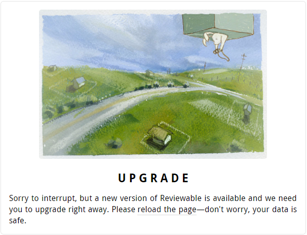
Crash
If Reviewable detects an unexpected error that it has no idea how to deal with, it will immediately put the application in a safe state, try to save your data, report the error to our exception capture database, and show the modal crash overlay. We investigate all errors captured this way so you don’t need to report them separately, but if it happens regularly (or you know how to reproduce it) then a tip is always appreciated!
Note that Reviewable is sensitive to all top-level exceptions, unhandled promise rejections, and other situations that can be caused by badly implemented browser extensions, following the philosophy of “better safe than sorry”. If you’re having trouble with Reviewable crashing all the time please try running it with all extensions disabled to confirm where the root cause lies.
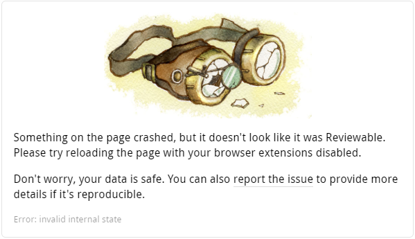
Tips and Tricks
Videos
We're trying out a new video format where an engineer goes through a real code review while we kibbitz and give them tips on using Reviewable:
There's a growing collection of tips in screencast format, if that's what you prefer, including:
- What's the fastest way to check out your review code?
- Keyboard shortcuts for efficient reviews
- Customizing keyboard shortcuts
- Customizing code review completion conditions
Articles
Here are some articles and blog posts on code reviews that we found worth reading:
Visual tweaks
Reviewable doesn't have a lot of settings exposed in the UI to customize how things look to keep things simple. However, you can easily inject a custom stylesheet to override styling on a wide range of elements. Here are some commonly requested examples.
Line numbers
Reviewable doesn't show line numbers in the diff for a number of reasons — there's a long discussion in issue #147. The snippet below overrides this. It's not perfect but it should work in the vast majority of cases:
div[data-line-number]:not([data-line-number="0"]):before {
content:attr(data-line-number);
position:absolute;
color: #444;
padding: 1px 3px 3px;
font-size: x-small;
display: block;
width: 20px;
text-align: right;
}
div[data-line-number]:not([data-line-number="0"]) div.hljs {
margin-left: 26px;
}
If you don't need to tweak these styles, just paste https://gist.githack.com/pkaminski/4fd7c7b9014856de32bb43f84a396772/raw/line_numbers.css into the custom stylesheet field.
Be careful though: by changing the layout in this way, Reviewable won't be able to automatically pick a diff width that fits your window so you'll need to control it manually.
Diff line background
When in side-by-side diff mode, Reviewable doesn't highlight the whole line — just the deltas. If you'd prefer the full line to also be highlighted like in unified diff mode you can use these styles:
.two.column.diff .diff.line:not(.keep) .line.wrapper:not(.empty) .left.line.content {
background-color: #FBDDDD; /* rgba(91, 220, 114, 0.20) on white */
}
.two.column.diff .diff.line.base:not(.keep) .line.wrapper:not(.empty) .left.line.content,
.two.column.diff .diff.line.whitespace:not(.keep) .line.wrapper:not(.empty) .left.line.content {
background-color: #FFF7F7; /* rgba(91, 220, 114, 0.05) on white */
}
.two.column.diff .diff.line:not(.keep) .line.wrapper:not(.empty) .right.line.content {
background-color: #DDF7E2; /* rgba(91, 220, 114, 0.20) on white */
}
.two.column.diff .diff.line.base:not(.keep) .line.wrapper:not(.empty) .right.line.content,
.two.column.diff .diff.line.whitespace:not(.keep) .line.wrapper:not(.empty) .right.line.content {
background-color: #EFFCF1; /* rgba(91, 220, 114, 0.05) on white */
}
.two.column.diff .diff.line .left.line.content .delta {
background-color: rgba(240, 92, 92, 0.30);
}
.two.column.diff .diff.line.base .left.line.content .delta,
.two.column.diff .diff.line.whitespace .left.line.content .delta {
background-color: rgba(240, 92, 92, 0.15);
}
.two.column.diff .diff.line .right.line.content .delta {
background-color: rgba(91, 220, 114, 0.30);
}
.two.column.diff .diff.line.base .right.line.content .delta,
.two.column.diff .diff.line.whitespace .right.line.content .delta {
background-color: rgba(91, 220, 114, 0.15);
}
Or just use this link: https://rawgit.com/pkaminski/2922da3d58f76a8ed7bf/raw/highlight_lines_in_two_columns.css.
Victory bunny
Don't like the merge bunny? Turn it off like this:
.victory.decor {display: none}
Accessibility
This snippet can be used to alter the diff colors for additions and removals, making them standout more. This may be helpful for those with Deuteranopia/Protanopia (green/red color blindness).
:root {
--diff-add: 33, 150, 243;
--diff-remove: 255, 235, 59;
}
The three values for each variable correspond to R,G and B color values and can be used to set the diffs to whatever colors you'd like. Do not add the rgb() wrapper around the values.
Removing wavy lines on collapsed regions
Want to turn the wavy lines off to simplify how collapsed diff regions look? This snippet will do the trick:
.review-page .file.root .file .wavy.edge {
background-image: none;
}
.review-page .file.root .file .top.wavy.edge {
margin-top: 1em;
margin-bottom: -0.5em;
}
.review-page .file.root .file .bottom.wavy.edge {
margin-bottom: 0.5em;
}
.review-page .file.root .file .declaration.include {
padding-top: 1em;
}
You can also use this link: https://rawcdn.githack.com/earlAchromatic/reviewable-custom-styles/6e35f21b6fa3d3978a4ae5f8ba0f23e2d5d6a475/no-wave.css
Skipping reviews of vendored dependencies
Depending on your package manager, you sometimes need to commit dependency source code into your repository but don't necessarily want to review updates to those hundreds or thousands of files every time you update. Reviewable offers a few helpful features for this situation, from least to most invasive:
- Suppress diffs for vendored files via
.gitattributes. - Use a custom review completion condition to group vendored files in the file matrix, which will allow you to mark them all as reviewed with one click.
- Use a custom review completion condition to preemptively treat all such files as reviewed. This is the nuclear option and should work by itself, or you can combine it with the previous options for more flexibility.
Ignore comments by bots
When a user posts a comment (whether via Reviewable or GiHub), we automatically snapshot all revisions to ensure that the comment's context is preserved. This can lead to a mess, though, if you're taking your time pushing commits to a PR before asking for a review and a bot (perhaps CI?) is posting comments as you go. There can be dozens of snapshotted revisions by the time you invite a reviewer!
To avoid this situation, Reviewable attempts to detect whether a comment was posted by a bot and avoids snapshotting revisions in that case. We detect bots by checking whether the username ends with [bot] (for GitHub app bots) or -bot, or the display name ends with (bot). If you have a favorite bot account changing its username could be tricky, but it should be easy to append (bot) to its name since that oughtn't be referenced anywhere.
Easy local revision checkout
TLDR
git fetch origin refs/reviewable/pr756/r6
git checkout FETCH_HEAD
Explanation
Reviewable stores references to commits associated with each revision on Github. This has a handy side effect of making it easy to checkout a local copy of any revision from any Reviewable pull request.
This can be done in two steps.
- Get a reference to the pull request or revision of interest.
- Checkout or make use of that reference.
1. Get the revision reference
If your prId were 756 and your desired revision were 6 as in the image above, you would store revision reference in .git/FETCH_HEAD constant using
git fetch origin refs/reviewable/pr756/r6
Note that the form of the reviewable reference titles as shown above is refs/reviewable/pr${prId}/r${revisionId} .
The ids prId and revisionId are available by inspection on the reviewable.io. review page:

You can also just explore the references using the git client, by typing a reference name partially, as in git fetch origin refs/reviewable/, and then use tab completion to get your options.
2. Use the revision reference
After saving the FETCH_HEAD reference as described above, you can use it as you see fit.
For example check out the revision code using
git checkout FETCH_HEAD
or glance at the log using
git log -n 1 --oneline FETCH_HEAD